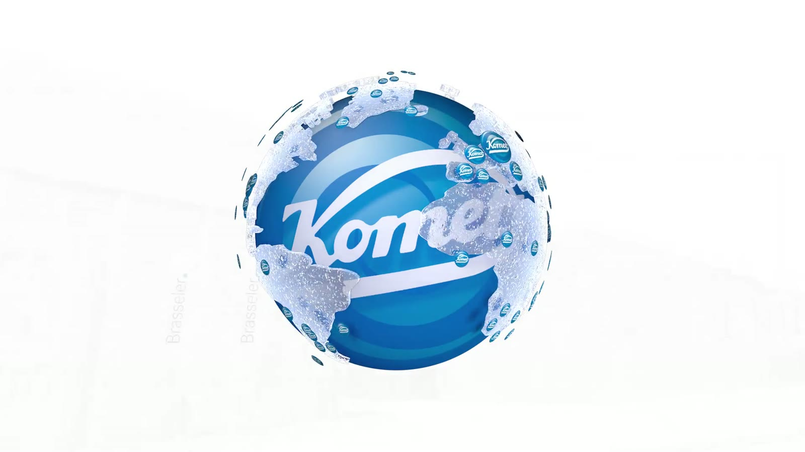
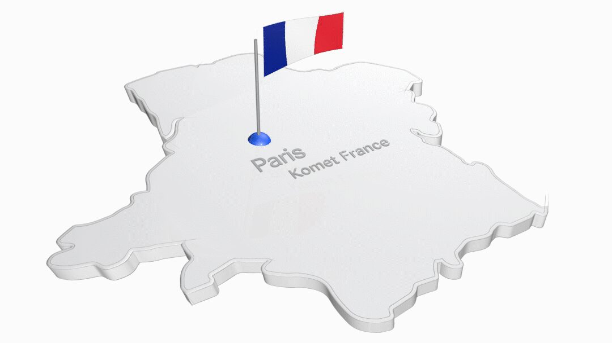
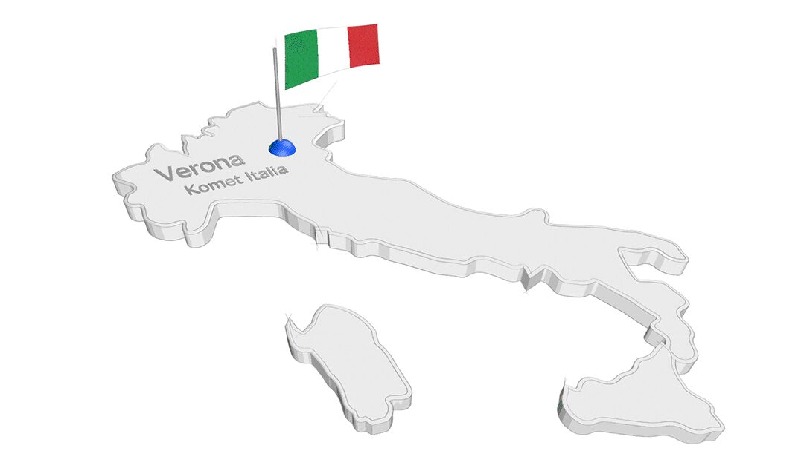
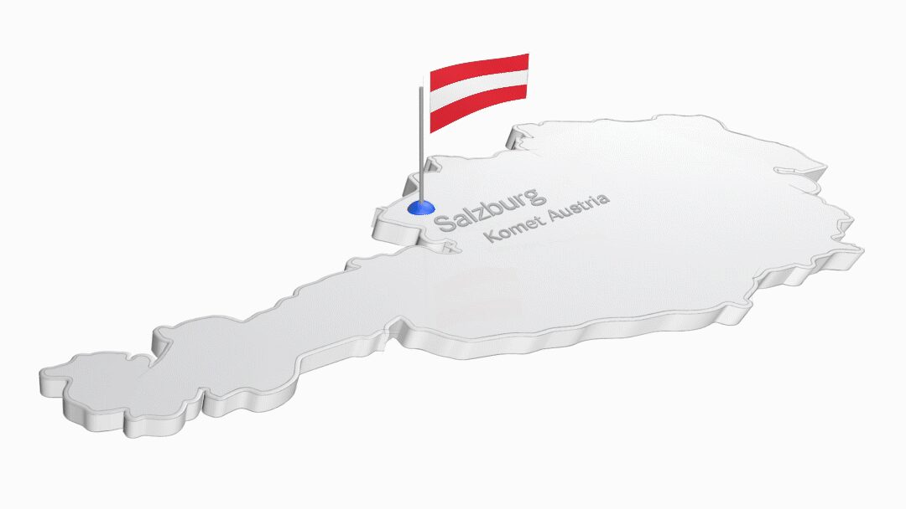
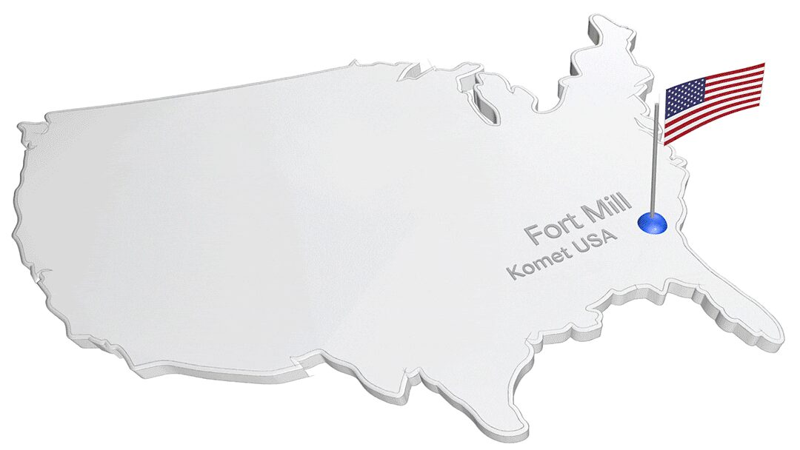
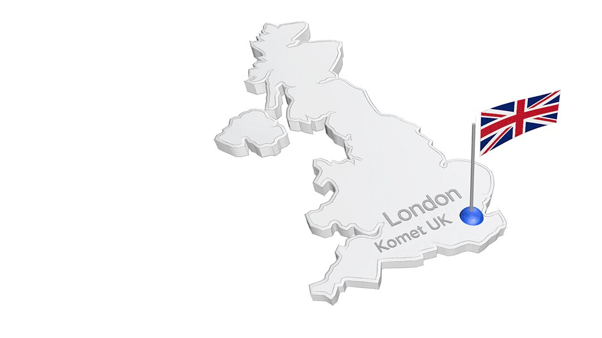
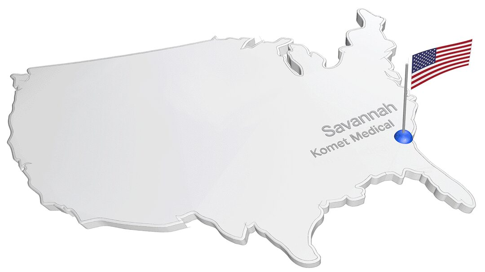

In Lemgo spricht man alle Sprachen: Unsere internationalen Vertriebsgesellschaften
Qualität ist eine weltweite Währung, vor allem in der Medizintechnik. Darum werden unsere Produkte von Zahnärzten, Zahntechnikern, Chirurgen und industriellen Anwendern in aller Welt geschätzt.
In über 100 Ländern ist unsere Qualität made in Lemgo erhältlich. Eigene Vertriebsgesellschaften und externe Handelspartner sind direkte Ansprechpartner der Kunden und sorgen für den für uns typischen Service.
Unsere internationalen Tochtergesellschaften sind reine Vertriebsunternehmen. Über 200 Mitarbeiter beobachten für uns die Märkte in ihren Ländern und stimmen ihre Erkenntnisse eng mit der Unternehmenszentrale in Lemgo ab.
So wird das Portfolio der ausschließlich in Lemgo produzierten Instrumente auf die unterschiedlichen Anforderungen der internationalen Kunden abgestimmt.

Komet France
Bereits seit 1977 ist Brasseler mit Komet in Frankreich vertreten. Das Unternehmen arbeitet von Paris aus.

Komet Italia
Seit 1986 gibt es die Brasseler-Tochter für den italienischen Markt mit Sitz in Mailand.
2025 wurde die „Komet Academy“ als internationales Kurszentrum für zahnmedizinische Weiterbildung eröffnet.

Komet Austria
Die österreichische Gesellschaft wurde 2002 gegründet, der Standort ist in Salzburg.

Komet USA
Von Fort Mill (South Carolina) aus arbeitet unsere US-Tochtergesellschaft seit 2007 für den amerikanischen Markt.

Komet UK
Mit der Gründung von Komet UK in Großbritannien im Jahr 2025 hat Brasseler seine internationale Präsenz weiter ausgebaut. Der Standort befindet sich in London.

Komet Medical USA
Seit 2024 sind wir mit Komet Medical USA in Savannah, Georgia, vertreten – für eine noch stärkere Betreuung unserer OEM-Partner auf dem US-Markt.